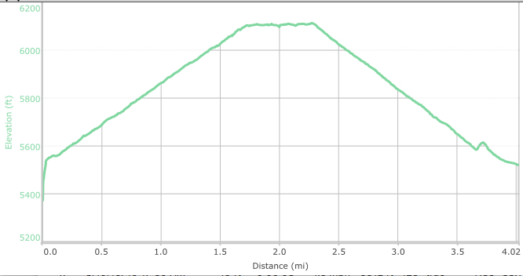

Hike New Mexico
w/ Tom & Ken
La Bajada Hill
| Difficulty | Round-trip | Type | Elev. Chg. | Exposure | Wow Factor | Facilities | Seasons | Get There |
|---|---|---|---|---|---|---|---|---|
| Easy | 2.4 miles | Out-and-back | 626 ft | Full sun | History & views | None | All | Directions |



- Mar 10, 2016: Road to the Sandia?
- Mar 10, 2016: Those sandstone cliffs
- Mar 10, 2016: Who piled that stone behind Tom?
- Mar 10, 2016: Bajada viewed from above
- Mar 10, 2016: Arch below, Tetilla Peak behind
- https://www.flickr.com/photos/139088815@N08/25568224712/in/photostream/
- https://www.flickr.com/photos/139088815@N08/25686952165/in/photostream/
- https://www.flickr.com/photos/139088815@N08/25568163782/in/photostream/
- https://www.flickr.com/photos/139088815@N08/25568143462/in/photostream/
- https://www.flickr.com/photos/139088815@N08/25568204652/in/photostream/
La Bajada Hill is an historic point of interest as well as a not-difficult hike up an old wagon-route to the top of the mesa. It is considered the steepest single ascent from Southern NM to Santa Fe, and was well known in the early days for its challenge to man and beast. It is a very scenic hike from the base, at the Santa Fe River basin, to the top of the mesa. It is exposed and dry, and the hiker should be prepared for sun and lack of water. There are numerous websites detailing the location, including historical info and USDA info. The La Bajada album is available here